Trades: making gear
Five trades turn raw material into things you wear, shoot or carry: Iron Forging, Carpentry, Leatherworking, Sewing and Jewelry Making. Each sits at the end of a chain of three skills: one gathers, one refines, one makes.
The short advice, which is our reading of the tables below:
- No trade will dress you better than the quests do. The crafted beginner sets give +1 to one attribute a piece, while the rewards in What to wear from level 8 to 25 give +1 to +3 to all four. What a trade gives you early is armor class, bags, ammunition, bandages and tools.
- Take up Leatherworking whatever you play. The hides come off animals you kill anyway, the first bag is made at skill 1, and the whole Dexterity set is made by skill 12.
- An archer adds Carpentry for arrows, a mage adds Sewing for bandages and later for silk robes.
- Iron Forging is the slow one. It is worth it for a Strength character who wants the heaviest armor at level 10, and for anyone who wants to make the tools of all the other trades.
- Jewelry Making waits. It needs the Talazar's Revenge expansion, and its silver is mined in that expansion's lands.
| Trade | Gathering, refining | Best early product | Starts to pay (our reading) |
|---|---|---|---|
| Iron Forging | Mining, Iron Smelting | Tools at skill 1 to 16, the steel set (level 10) at skill 15 to 30 | Character level 10 |
| Carpentry | Lumberjacking, Milling | Arrows and bolts at skill 0, an 8-slot crate at 5 | Level 1 for an archer |
| Leatherworking | Skinning, Tanning | An 8-slot bag at skill 1, the leather set (level 10) at 0 to 12 | Level 1 |
| Sewing | Spinning, Weaving | Bandages at skill 0, an 8-slot bag at 3, the wool set (level 10) at 2 to 27 | Level 1 for bandages, level 10 for a mage |
| Jewelry Making | Mining, Iron Smelting | Rings and amulets worn from level 10 | When you can get silver |
Taskmasters, who hand out crafting orders for experience, stand in Lotor's Summer Palace and on Scarab Island. They ask for a subscription and level 10 in the trade, and are the fastest way to take a trade far: see Taskmasters. How skill gain works, and where the forges and vats are, is under Trades: how they work.
Mining, Smelting and Iron Forging
Worth it? Forging makes the iron armor with the highest armor class a level 10 character can wear, the tools of every other trade, and plain weapons. It suits a Strength character: Mining and Forging both use Strength and most pieces ask for 5 to 10 of it. It pays from character level 10, and it is the slowest trade to raise: about 700 ingots to skill 16 by our reckoning. The game's recipe table calls the trade "Blacksmith".
How to start. On Valinor the Blacksmith Trainer (753,112) gives a Pick Axe and the Blacksmith Guidebook (by AE Guides). From then on:
- Click the Pick Axe, then a mountain, a boulder or a mine wall. Keep at a spot until it says "There is nothing to mine here". On Valinor the mountains are north-west of the castle. Rocks sometimes give gems as well.
- At a forge, click the bellows beside it to light it, then click the ore, then the forge. That smelts the ore into Iron Ingots.
- Stand next to an anvil, click the Blacksmith Hammer, then the ingots. The menu shows what you can make.
AE Guides does not say where the first Blacksmith Hammer comes from; smiths can make one at skill 5, and "Other Merchants sell armor, weapons, forging and carpentry tools" (Help Menu).
The fastest ladder. The figure per ingot is nearly the same for every weapon and tool of one or two ingots (about 4,250, plus 42 a recipe level), and far lower for most armor: a patch of 2022 cut the chainmail pieces on purpose. So make the highest small weapon or tool you can, and make armor only to wear it.
| Forging skill | Make | Needs | Figure per ingot | Why |
|---|---|---|---|---|
| 0 | Small Dagger | 1 Iron Ingot | 4,253 | The only recipe |
| 1 to 2 | Hatchet, then Dagger (2) | 1 | 4,295, 4,337 | One ingot a try. The Skinning Knife (1) takes 3 ingots; make one for yourself |
| 2 to 5 | Pick Axe (2), Leatherworking Tools or Light Axe (3), Saw or Great Dagger (4) | 2 | 4,274 to 4,316 | Three of these are tools you will use |
| 5 to 9 | Blacksmith Hammer or Small Mace (5), Axe or Sword (6) | 2 | 4,337 to 4,358 | Helm (7) and Battle Helm (8) give the same per ingot with 3 and 4 a try |
| 9 to 13 | Mace (9), Rapier or Carpenters Tools (10), Battle Axe (11), Short Stiletto (12) | 2 | 4,421 to 4,484 | |
| 13 to 16 | Dirk or Flail | 2 | 4,506 | The last of the full-figure weapons |
| 16 to 22 | Scissors | 1 | 7,600 | The best figure per ingot of any iron recipe, and tailors need them |
| 22 to 25 | Sabre (22), or stay with Scissors | 2 | 4,148 | Whether Scissors still teach six levels on is not known |
| 25 to 36 | Keen Hatchet (25), Keen Axe or Light Axe (26), Keen Small Dagger or Small Mace (27) | 2 Thrallenite Ingot | 4,737 | Needs Mining 30. Without thrallenite, Scissors |
| 36 on | Fine Hatchet or Light Axe (36), Fine Axe (38), Fine Battle Axe (43), Fine Small Mace (45) | 2 Brimidian Ingot | 5,417 | Needs Mining 45 and an Obelisk |
Do not level on these: Chain Coif (919 per ingot), Chainmail Gloves (1,826), any armor from skill 14 up (1,100 to 2,200), Long Sword (3,248).
By the rule above, with no failures and no bonus, this ladder takes about 410 ingots to skill 13, 680 to 16 and 1,460 to 25. You mine and smelt the ore for them yourself, so Mining and Smelting rise alongside.
Useful gear. For a weapon, "needs" is the level of its own weapon skill; for armor, your character's level. Delay is the weapon's speed figure in the game's table; lower is faster.
| Item | Forging | Ingots | Needs | Stats | Good for |
|---|---|---|---|---|---|
| Chain Coif | 2 | 3 | Str 8 | Armor 8 | A first helmet |
| Chainmail Gloves | 10 | 4 | none | Armor 12 | Hands, where the quests give little before 15 |
| Shield | 12 | 5 | Str 5 | Armor 15 | A first shield |
| Steel Battle Helm | 15 | 4 | Level 10, Str 7 | +1 Str, armor 14 | The steel set |
| Chainmail Leggings | 16 | 4 | none | Armor 16 | Same armor as Shadow Leggings, without the +2 to all |
| Steel Belt | 17 | 3 | Level 10, Str 7 | +1 Str, armor 5 | The steel set |
| Chainmail | 18 | 5 | none | Armor 20 | Chest, against Triddle Shell Armor's 12 |
| War Axe | 19 | 2 | no skill | 9-44, delay 3 | The hardest hit a new warrior can swing; Sword of the Island Guard is 7-18, delay 1.8 |
| Steel Shield | 19 | 7 | Level 8, Str 10 | Armor 23 | |
| Giant Axe | 20 | 3 | Axes 23 | 19-41, delay 2.5 | |
| Steel Bow | 20 | 2 | Bows 40 | 11-27, delay 1.25 | An archer's bow for later, made of iron |
| Platemail | 22 | 6 | Str 5 | Armor 25 | |
| Steel Boots | 22 | 6 | Level 10, Str 7 | +1 Str, armor 4 | The steel set |
| Rugged Plate | 23 | 6 | Level 10 | Armor 28 | Chest; Worn Guard Halfplate (level 15) has 22 with +2 Str +2 Dex |
| Steel Gauntlets | 23 | 6 | Level 10, Str 7 | +1 Str, armor 16 | The steel set |
| Broadsword | 24 | 2 | Large Blades 20 | 12-27, delay 1.75 | |
| Steel Plate Leggings | 27 | 8 | Level 10, Str 7 | +1 Str, armor 25 | The steel set |
| Steel Platemail | 30 | 10 | Level 10, Str 7 | +1 Str, armor 29 | The steel set |
| Double Axe | 37 | 5 | Axes 30 | 33-50, delay 2.5 | |
| Greatsword | 38 | 5 | Large Blades 19 | 21-37, delay 2.5 |
The steel set is the forged one of the three "craftable sets for low level players (10+)" that a patch of 2020 added: six pieces, +6 Strength and 93 armor together, 37 ingots, Forging 30 for the last. Against the Orcish Warrior set of level 20 (Plate +4 Str +3 Con with armor 30) it gives the same armor ten levels earlier and much less Strength. Our reading: forge the cheap pieces (helm, belt) on the way up, and do not chase skill 30 for the plate.
Beyond level 50 of the skill: the Thrallen set (Forging 38 to 50, enchanted thrallenite, worn from level 15, up to +3 Str +2 Con a piece; Talazar's Revenge), the Superior chain and plate pieces (40 to 70, level 20 and Strength 25, armor only), the Nightfall set (72 to 87) and ship's cannon. Forging makes no container.
Tools a smith makes for the other trades: Skinning Knife (1), Pick Axe (2), Leatherworking Tools (3), Saw (4), Blacksmith Hammer (5), Carpenters Tools (10), Scissors (16), Heavy Mining Pick (35).
Quests that feed it
| Quest | Where | What | Gives |
|---|---|---|---|
| Blacksmith TrainingAE Guides | The Blacksmith Trainer, Valinor (753,112) | Bring 10 Iron Ore, 10 Iron Ingots, a Small Dagger, a Light Axe (Forging 3), a Small Mace (5), then kill the Hobgoblin Blacksmith in the goblins' lair at Lanore | Pick Axe and guidebook at the start; 330, 660, 990, 1,320 and 2,887 experience pool for the first five steps (by AE Guides); the last reward is not recorded |
13 pictures of Blacksmith Training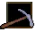 Pick AxeAE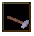 Blacksmith HammerAEBlacksmith GuidebookAE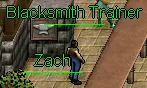 Blacksmith TrainerAEIron OreAE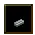 Iron IngotAE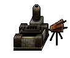 ForgeAEAnvilAE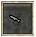 Small DaggerAE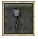 Light AxeAE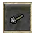 Small MaceAEHobgoblin BlacksmithAEMap of the location of Hobgoblin BlacksmithAE | |||
| Gem ThievesAE Guides · Wiki | The Dalvon Miner, Fort Eastwatch | See Gem Thieves; the last step is Master Blaster (level 40) | Dalvon Miner's Ring: +5 Forging, +5 Smelting, +5 Mining, worn from level 14 |
20 pictures of Gem Thieves 10 DiamondsAE 10 DiamondsAE 10 Diamonds (tooltip)AE 10 Diamonds (tooltip)AE Dalvon Miners RingAE Dalvon Miners RingAE Dalvon Miners Ring (tooltip)AE Dalvon Miners Ring (tooltip)AE Dalvon MinerAE Dalvon MinerAE 10 DiamondsAE 10 DiamondsAE 10 Diamonds (tooltip)AE 10 Diamonds (tooltip)AE Dalvon MineAE Dalvon MineAE Kobold MinerAE Kobold MinerAE Kobold Miner (tooltip)AE Kobold Miner (tooltip)AE Kobold ForemanAE Kobold ForemanAE Kobold Foreman (tooltip)AE Kobold Foreman (tooltip)AE Master BlasterAE Master BlasterAE Master Blaster (tooltip)AE Master Blaster (tooltip)AE Dalvon Steel HelmAE Dalvon Steel HelmAE Dalvon Steel Helm (tooltip)AE Dalvon Steel Helm (tooltip)AE Dalvon Steel LeggingsAE Dalvon Steel LeggingsAE Dalvon Steel Leggings (tooltip)AE Dalvon Steel Leggings (tooltip)AE Dalvon Steel ArmorAE Dalvon Steel ArmorAE Dalvon Steel Armor (tooltip)AE Dalvon Steel Armor (tooltip)AE | |||
| The Ways of MiningWiki | Russell, in the Flataga Mines (390,1317) | Mine the rock at 211,1256 in Ettin Valley, among level 54 Ettins | 4,125 and then 61,000 Mining experience and a Fortified Mining Pick (by the wiki). By the client's table that is Mining 15 from nothing |


Gear that helps and is within reach early: the Kobold Miner's Belt (+4 Str +4 Dex +5 Mining, level 15), which Kobold Miners and Foremen drop by Dragoneer's Den, so you may get one during Gem Thieves; and the Miners Helm (+5 Str +5 Int +10 Mining, level 15).
Lumberjacking, Milling and Carpentry
Worth it? For an archer, yes, from the first day: arrows and bolts are the first recipe, and bows, crossbows, staves and polearms follow. For everybody else it is the trade of boxes: an 8-slot crate at skill 5 and the 24-slot Storage Crate at 35. It costs nothing but time, since any tree gives logs.
How to start. The Carpentry Trainer on Valinor (753,116) gives a Lumberjack Axe, a Saw, Carpenter's Tools and the guidebook (by AE Guides).
- Click the Lumberjack Axe, then a tree, until "There is nothing to chop here". Dead trees sometimes give kindling.
- Click the Carpenter's Tools, then the logs: the first recipes are made of logs.
- For everything from skill 5 on, mill planks first: click the Saw, then the logs.
The fastest ladder
| Carpentry skill | Make | Needs | Figure per piece | Why |
|---|---|---|---|---|
| 0 to 5 | Torch | 1 Log | 5,255 | Four times what Arrows give per log (3 logs, 4,158). Make arrows when you need arrows |
| 5 to 10 | Small Crate | 1 Plank | 6,275 | An 8-slot box each time; the first plank recipe |
| 10 to 14 | Music Box (10) | 1 Plank | 6,275 | Same figure, also 8 slots |
| 14 to 25 | Farm Scythe (14) | 1 Plank | 6,875 | The best plain-plank figure. Footchest (19) gives 6,275 and is a 12-slot box |
| 25 to 33 | Keen Club or Heavy Foraging Stick (25), Alchemist's Mortar (27) | 2 Fine Wood Plank | 4,156 to 4,456 | Needs Lumberjacking 30. With plain planks, stay on the Farm Scythe |
| 33 on | Fine Club (33) | 2 Heartwood Plank | 4,940 | Lumberjacking 45 and an Obelisk |
| 50 | Lobster Trap | 2 Fine Wood Plank | 5,500 | Tides of Fate |
Do not level on weapons that eat planks: a Giant Club gives 881 per plank, a Spear 990, a Heavy Crossbow 866. If the Iron Forging rule holds here, the ladder takes about 1,400 logs and planks to skill 25.
Useful gear
| Item | Carpentry | Needs to make | Needs to use | Stats | Good for |
|---|---|---|---|---|---|
| Arrows, Bolts | 0 | 3 Logs | none | Damage +1 | Every archer. A patch of 2021 tripled the number made per try |
| Short Bow | 11 | 2 Planks | no skill | 4-14, delay 1.75 | Weaker than the Island Archers Bow (5-15, delay 1.5) |
| Battle Staff | 12 | 3 Planks | no skill | 2-14, delay 1.5 | A first polearm |
| Elfin Arrows | 14 | 3 Enchanted Wood Planks | none | Damage 5, +20 Archery | The planks must be enchanted with the Enchant Wood spell |
| Aspirants Staff | 17 | 6 Enchanted Wood Planks | Mage Weapons 10, Int 15 | +3 Int | A mage's first crafted staff |
| Wooden Bow | 18 | 3 Planks | Bows 5 | 2-17, delay 1 | The fastest early bow |
| Light Crossbow | 19 | 4 Planks | no skill | 4-11, delay 1.5 | |
| Fancy Bow | 20 | 5 Planks | Bows 15 | 7-22, delay 1.45 | The bow for Bows 15 to 25 |
| Oak Bow | 21 | 7 Planks | Bows 25 | 8-33, delay 1.75 | |
| Broadhead Arrows | 21 | 3 Enchanted Wood Planks | none | Damage 5, extra blunt damage | |
| Prestidigitators Wand | 22 | 10 Enchanted Wood Planks | Mage Weapons 15, Int 15 | +1 Int, +25 health | |
| Pole Axe | 22 | 8 Planks | Axes 16 | 15-36, delay 2.5 | |
| Crossbow | 23 | 7 Planks | Crossbows 10 | 7-26, delay 1.85 | |
| Brown Shield | 23 | 4 Planks | none | Armor 15 | The same armor as the iron Shield |
| Glaive | 24 | 10 Planks | Polearms 11 | 15-34, delay 3 | Island Guard Lance is 7-20, delay 1.95 |
| Heavy Crossbow | 25 | 12 Planks | Crossbows 25 | 12-47, delay 2.5 | |
| Keen Wooden Bow | 26 | 3 Fine Wood Planks | Bows 22 | 7-25, delay 1.7 | |
| Piercing Arrows | 26 | 3 Enchanted Wood Planks | none | Damage 6, extra pierce damage | |
| Conjurering Staff | 33 | 10 Enchanted Fine Wood | Mage Weapons 17, Int 25 | +2 Int +2 Con | |
| Lance | 41 | 12 Planks | Polearms 15 | 19-40, delay 3 |
Tools it makes for others: Foraging Stick (1), Mixing Bowl (2), Mixing Spoon (4), Lumberjack Axe (7), Shovel (10), Empty Bucket (11), Farm Scythe (14), Alchemist's Mortar (27). Beyond skill 50 come the Heartwood and Greater Heartwood weapons, boat repair kits (45, 70, 90) and the mage staves up to the High Priests Staff (70).
Containers. What each holds and the weight it takes off are AE Database's; slots and skill are the game's.
| Container | Carpentry | Needs | Slots | Holds |
|---|---|---|---|---|
| Small Crate | 5 | 1 Plank | 8 | Anything |
| Music Box | 10 | 1 Plank | 8 | Anything |
| Footchest | 19 | 1 Plank | 12 | Anything |
| Chest | 24 | 2 Planks | 16 | Anything |
| Tool Chest | 26 | 6 Planks | 16 | Anything |
| Storage Crate | 35 | 8 Fine Wood Planks | 24 | Anything |
| Jewelry Case | 40 | 6 Enchanted Heartwood | 24 | Jewelry |
| Scroll Case | 43 | 8 Enchanted Heartwood | 24 | Scrolls |
| Weapons Cabinet | 45 | 14 Planks | 64 | Melee weapons |
| Missile Weapons Cabinet | 47 | 14 Planks | 64 | Ranged weapons (Talazar's Revenge) |
| Wooden Trunk | 60 | 8 Enchanted Heartwood | 16 | Anything |
| Alchemy Chest | 64 | 6 Enchanted Heartwood | 64 | Alchemy items, half weight (Talazar's Revenge) |
| Scholar's Trunk | 69 | 15 Enchanted Greater Heartwood | 48 | Scrolls |
| Glowing Storage Crate | 70 | 3 Greater Heartwood Planks | 32 | Anything, a quarter of the weight |
| Glowing Jewelry Case | 70 | 1 Enchanted Greater Heartwood | 64 | Jewelry |
| Treasure Hunter's Chest | 75 | 75 Enchanted Greater Heartwood | 64 | Scrolls and maps |
| Feather Box | 82 | 10 Fine Wood Planks | 12 | Anything, a quarter of the weight |
| Armor Cabinet | 86 | 9 Enchanted Greater Heartwood | 64 | Armor (Talazar's Revenge) |
| Head Case | 90 | 10 Greater Heartwood Planks | 128 | Player heads |
| All Weapons Cabinet | 92 | 10 Enchanted Greater Heartwood | 64 | All weapons (Talazar's Revenge) |
| Cannon Ball, Sail and Cannon Chests | 97, 98, 99 | 10, 15, 20 Heartwood Planks | 16 each | Ship's gear, half weight (Tides of Fate) |
The early ones are cheap: an 8-slot crate for one plank at skill 5, a 16-slot Chest for two at 24. The Storage Crate that Valinor's Farming trainer gives away is a skill 35 recipe of Fine Wood. Carpentry makes no quiver.
Quests that feed it
| Quest | Where | What | Gives |
|---|---|---|---|
| Carpenter TrainingAE Guides | The Carpentry Trainer, Valinor (753,116) | Bring 10 Logs, 10 Planks, 20 Arrows, a Mixing Bowl (Carpentry 2), a Mixing Spoon (4), then kill the Goblin Carpenter at Lanore | All four tools at the start; the same pool rewards as the smith's; the last reward is not recorded |
11 pictures of Carpenter Training | |||
| Mukk The LumberjackWiki | Mukk, east of the spawn gate west of Vrethpool | Carry firewood to his wife Renn inside the south wall of Hothbra, and lunch back. No fight; the road passes New Korelith | About 36,000 and 33,000 experience and 33,000 Lumberjacking experience (by the wiki): Lumberjacking 12 from nothing |
| Fellow ArcherWiki | Klaresh, Lotor's Castle (258,1151) | Asks for 12 Planks, which you can now mill yourself | Archery experience; see Other skill quests on Krythan |


Skinning, Tanning and Leatherworking
Worth it? Yes, for everyone, from level 1. Hides come from the animals you hunt anyway, the first bag is made at skill 1, and the leather set for level 10 is finished at skill 12 with 12 pieces of leather. It suits a Dexterity character best, since both Skinning and Leatherworking use Dexterity and the sets ask for it. The recipe table calls the trade "Leathercrafting".
How to start. The Leatherworking Trainer on Valinor (753,108) gives a Skinning Knife, Leatherworking Tools and the guidebook (by AE Guides).
- Kill an animal, open the corpse with Space, click the Skinning Knife, then the carcass. The in-game guidebook names cows, bulls, rabbits, snakes, wargs, bears, wolves, deer, sheep and rams. On Valinor, AE Guides names the Dredge Spider, Snake, Grass Viper and Deer.
- At a tanning vat, click the hide, then the vat: that tans it into Leather. A Potion of Tanning does the same away from a vat, for less experience (patch notes of 2021).
- Stand at a leatherworking bench, click the tools, then the leather.
Each of the three towns has a farm with Sheep (level 2), Cows (4 or 5) and Rams (8) close by, in the game's own table of what roams where: north of Krog around 3064,3708, south-west of Silvest around 1024,1440, and west of Whisperdale around 321,3422. Deer (3) and Snakes (2) are all around every town.
The fastest ladder
| Leatherworking skill | Make | Needs | Figure per leather | Why |
|---|---|---|---|---|
| 0 | Leather Cap, the one worn from level 10 | 1 Leather | 4,792 | The best figure of any plain-leather recipe, and the first set piece. The seven colored caps (skill 1) take 2 leather for the same figure |
| 1 to 3 | Leather Bag | 1 Leather | 4,192 | An 8-slot bag each time |
| 3 to 10 | Leather Gloves of the set (3), or keep making caps and bags | 1 Leather | 3,592 | Nothing between 3 and 10 beats the cap per leather: Leather Sling 2,157, Leather Leggings 2,457, Leather Belt 2,175 |
| 10 to 16 | Padded Cap (10), Leather Armor of the set (12) | 2 Leather | 2,757 | |
| 16 to 21 | Hardened Leather Helm | 3 Leather | 2,423 | |
| 21 to 22 | Padded Armor, the plain one | 4 Leather | 2,385 | |
| 22 to 27 | Bag of Dimension | 1 Quality Leather | 7,697 | Needs Skinning 30. An 8-slot bag that takes off 54% of the weight |
| 27 to 50 | Rough Scroll (27) | 1 Quality Leather | 7,055 | |
| 50 on | Vellum | 1 Superior Leather | 11,330 | Skinning 45 and an Obelisk |
If a recipe far below your skill still teaches in full, which nobody has tested, the Leather Cap stays the best use of plain leather all the way to 22: about 1,370 leather by the Iron Forging rule. Do not level on the Small Belt (840 per leather) or on anything of Zombie Skin (60 to 130 per skin).
Useful gear
| Item | Leatherworking | Needs to make | Needs to wear | Stats | Good for |
|---|---|---|---|---|---|
| Leather Cap | 0 | 1 Leather | Level 10, Dex 7 | +1 Dex, armor 10 | The leather set |
| Leather Gloves | 3 | 1 Leather | Level 10, Dex 7 | +1 Dex, armor 13 | The leather set |
| Leather Sling | 4 | 2 Leather | no skill | 4-9, delay 1.25 | A thrown weapon; a smith makes Pebbles for it at Forging 1 |
| Leather Leggings | 6 | 2 Leather | Level 10, Dex 7 | +1 Dex, armor 16 | The leather set |
| Leather Belt | 8 | 2 Leather | Level 10, Dex 7 | +1 Dex, armor 5 | The leather set |
| Leather Shoes | 11 | 4 Leather | Level 10, Dex 7 | +1 Dex, armor 4 | The leather set |
| Leather Armor | 12 | 2 Leather | Level 10, Dex 7 | +1 Dex, armor 22 | The leather set |
| Cestus | 15 | 4 Leather | none | +10 Unarmed, armor 9 | Fist fighters |
| Belt of the Undying | 15 | 10 Zombie Skin | Level 25, Dex 30 | +1 Int +2 Dex +1 Con, +1 Leatherworking, armor 7 | The Undying set |
| Gloves of the Undying | 15 | 15 Zombie Skin | Level 25, Dex 30 | +3 Int +3 Dex, +1 Tanning, armor 10 | The Undying set |
| Helm of the Undying | 15 | 25 Zombie Skin | Level 25, Dex 30 | +3 Int +3 Dex, +2 Leatherworking, armor 12 | The Undying set |
| Boots of the Undying | 15 | 25 Zombie Skin | Level 25, Dex 30 | +2 Int +2 Dex +2 Con, +1 Tanning, armor 7 | The Undying set |
| Cloak of the Undying | 15 | 30 Zombie Skin | Level 25, Dex 30 | +4 Dex +2 Con, +1 Leatherworking, +1 Tanning, armor 7 | The Undying set |
| Legs of the Undying | 15 | 30 Zombie Skin | Level 25, Dex 30 | +3 Int +3 Dex +2 Con, +2 Tanning, armor 13 | The Undying set |
| Hardened Ribcage | 15 | 30 Zombie Skin | Level 25, Dex 30 | +2 Int +4 Dex +2 Con, +1 Leatherworking, armor 15 | The Undying set |
| Staff Sling | 18 | 4 Leather | Thrown Weapons 3 | 6-18, delay 1.75 | |
| Good Leather Sling | 26 | 2 Quality Leather | Thrown Weapons 10 | 10-23, delay 1.2 |
Two sets stand out.
The leather set is the second of the craftable level 10 sets: six pieces, +6 Dexterity and 70 armor together, for 12 leather and skill 12. A new archer can wear all of it the day he reaches level 10, where the quests give one piece at a time: the Hard Leather Cap of Krog (+2 Str +1 Dex +2 Con, armor 15) is better than its cap, the Shadow pieces (+1 or +2 to all) better than its gloves and leggings. Wear the leather set until those come in.
The Undying set is new: a patch of 10 January 2026 added Zombie Skin as "a low level crafting material to leatherworking. No tanning required". All seven pieces are skill 15 recipes and give +21 Dexterity, +14 Intelligence and +9 Constitution together, for 165 skins, worn from level 25 with 30 Dexterity. That is more Dexterity than the Night Elf Archer set of level 20 gives (+16). Zombie Skin drops from Rancid Zombies (level 7) and Zombies (13) by AE Database; Rancid Zombies roam north of Silvest around 1127,1198 and east of Whisperdale around 648,3331, in the game's table of what roams where. Our reading: for an archer or a Dexterity mage this is the best thing a beginner's trade makes. No player source describes it yet, so see the last section.
The plain pieces (Sandals, Padded, Gladiator, Studded and Hardened armor, skill 2 to 41) carry no bonus and less armor than the set; skip them. Beyond: the "Superior" pieces of Quality leather (skill 24 to 45, armor only), the Enchanted Quality Leather set (61 to 74, level 45, Str 20, Dex 40), Wyvern Leather (65 to 85, level 70) and the dragon sets at 100.
Containers
| Container | Leatherworking | Needs | Slots | Holds |
|---|---|---|---|---|
| Leather Bag | 1 | 1 Leather | 8 | Anything |
| Ore Pouch | 5 | 3 Leather | 8 | Ore, a quarter off the weight |
| Leather Purse | 14 | 4 Leather | 12 | Anything |
| Bag of Dimension | 22 | 1 Quality Leather | 8 | Anything, 54% off the weight |
| Potion Bag | 62 | 6 Superior Leather | 24 | Potions, 15% off (Talazar's Revenge) |
| Large Mining Pack | 68 | 6 Flawless Leather | 16 | Blacksmith items, 20% off (Talazar's Revenge) |
| Wyvern Leather Satchel | 100 | 25 Immaculate Wyvern Leather | 16 | Anything, 90% off |
| Wyvern Leather Quiver | 100 | 20 Immaculate Wyvern Leather | 24 | Arrows, 99% off |
| Adventurer's Pack | 100 | 40 Immaculate Wyvern Leather | 48 | Anything, 99% off |
The only quiver any trade makes is the Wyvern Leather Quiver at skill 100. A miner should make an Ore Pouch.
Quests that feed it
| Quest | Where | What | Gives |
|---|---|---|---|
| Leatherworking TrainingAE Guides | The Leatherworking Trainer, Valinor (753,108) | Bring 10 Skinned Hides, 10 Leather, a Leather Cap, a Sling (Leatherworking 4), Leather Leggings (6), then kill the Goblin Leatherworker at Lanore | Knife, tools and guidebook at the start; the same pool rewards; the last reward is not recorded |
12 pictures of Leatherworking Training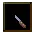 Skinning KnifeAE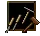 Leatherworking ToolsAELeathercrafting GuidebookAE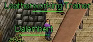 Leatherworking TrainerAE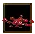 CarcassAETanning VatAELeather WorkbenchAE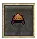 Leather CapAE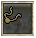 Leather SlingAE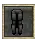 Leather LeggingsAEGoblin LeatherworkerAEMap of the location of Goblin LeatherworkerAE | |||
| Zebra Hide Gear | Patrick Darby, Newtown (Tides of Fate) | 50 Panthers, then 30, 50 and 150 Zebra hides at Skinning 45, 55 and 65 | Zebra Hide Leggings, Cape and Armor (by the wiki) |


Sewing
Worth it? For bandages, from the first day: one piece of Cloth makes ten of them at skill 0 (patch notes of 2021), and since 2026 your First Aid bonus counts when you heal with them. Beyond that it is the mage's trade: the wool set gives Intelligence at level 10, and the silk robes are as good as a mage's quest robe. The chain is the longest of all (grow or find the fibre, spin, weave, sew), which is why we would not start it before the others. The recipe table calls it "Tailoring".
Where the cloth comes from
| Fibre | From | Spun into | Woven into |
|---|---|---|---|
| Cotton | Grown from Cotton Seed, which farm shops sell since 2022; or buy String from the provisioner Whiliam Rosen on Valinor (by AE Guides) | String | Cloth |
| Wool | Sheep (by Dragoneer's Den). The item table has Shears; Valinor's Tailoring Trainer explains it if you speak to her again (patch notes of 2024) | Woolen Yarn | Woolen Fabric |
| Raw Silk | Dropped by spiders, by AE Database: Dredge Spider (level 1), Spider (3), Cave Spider (8), Black Widow Hatchling (9). Spiders roam Valinor and the country around Krog and Silvest, Black Widow Hatchlings the woods around Whisperdale | Silk Thread | Silk Cloth |
| Malacinth Flax | A plant grown from seed found with Foraging 25 and planted with Planting 30 (by Dragoneer's Den) | Malacinth Twine | Malacinth Fabric |
| Hemp | Seeds drop rarely from sea chests (patch notes of 2025) | Hemp Cloth |
String and Cloth also drop ready-made from slimes, by AE Database: Slimy Ooze (4), Filthy Sludge (7) and Viscous Mold (12) drop both, Green Slime (6) Cloth. Slimy Oozes are all around Whisperdale, and three of these four are the creatures of "Oozing on the Job".
How to start. Spin the fibre at a spinning wheel, weave the thread at a loom, then click Scissors and the cloth. Provisioners sell Scissors (Help Menu), a smith forges them at skill 16, and the Tailoring Trainer on Valinor (736,108) hands a pair out during her quest (by AE Guides). Spinning and Weaving are skills of their own and rise as you go.
The fastest ladder
| Sewing skill | Make | Needs | Figure per cloth | Why |
|---|---|---|---|---|
| 0 to 3 | Silk Cap if you have silk; Bandage if you have cotton | 1 Silk Cloth; 1 Cloth | 4,283; 2,483 | Bandages are worth having whatever they teach |
| 1 to 3 | Cloth Gloves | 1 Cloth | 3,283 | The better cotton recipe |
| 3 to 4 | Cloth Bag | 1 Cloth | 4,230 | An 8-slot bag each time |
| 4 to 9 | Silk Bandage | 1 Silk Cloth | 4,550 | |
| 9 to 12 | Woolen Gloves | 1 Woolen Fabric | 4,539 | A set piece |
| 12 to 25 | Woolen Slippers | 1 Woolen Fabric | 4,935 | A set piece. Nothing of two or more cloths comes near: Silk Pants (17) 3,376, Silk Tunic (23) 2,331 |
| 25 on | Superior Cloth Cap (25), Superior Cloth Gloves (34) | 2 Malacinth Fabric | 3,616, 3,839 |
A patch of 2022 reworked the early cotton, silk and wool recipes ("xp/difficulty at early levels"), and the figures above are the table's after that.
Useful gear
| Item | Sewing | Needs to make | Needs to wear | Stats | Good for |
|---|---|---|---|---|---|
| Bandage | 0 | 1 Cloth, makes 10 | none | Heals | Everyone |
| Woolen Cap | 2 | 1 Woolen Fabric | Level 10, Int 7 | +1 Int, armor 9 | The wool set |
| Silk Bandage | 4 | 1 Silk Cloth, makes 10 | none | Heals | |
| Woolen Gloves | 9 | 1 Woolen Fabric | Level 10, Int 7 | +1 Int, armor 7 | The wool set |
| Woolen Sash | 11 | 2 Woolen Fabric | Level 10, Int 7 | +1 Int, +3 Nature, armor 5 | The wool set |
| Woolen Slippers | 12 | 1 Woolen Fabric | Level 10, Int 7 | +1 Int, armor 4 | The wool set |
| Silk Gloves | 13 | 2 Silk Cloth | none | +2 Int +1 Con, armor 8 | A mage's hands from level 1 |
| Woolen Cloak | 15 | 3 Woolen Fabric | Level 10, Int 7 | +1 Int, armor 3 | The wool set |
| Woolen Pants | 15 | 2 Woolen Fabric | Level 10, Int 7 | +1 Int, armor 10 | The wool set |
| Silk Sash | 16 | 2 Silk Cloth | none | +1 Int, armor 6 | |
| Silk Pants | 17 | 2 Silk Cloth | Level 15 | +1 Str +1 Int, armor 8 | |
| Long Cape | 18 | 2 Silk Cloth | Level 10, Str 7 | +1 Str, armor 3 | A cloak for the steel set |
| Silk Tunic | 23 | 3 Silk Cloth | Level 15 | +1 Str +2 Int +1 Con, armor 11 | |
| Yellow Silk Robe | 23 | 15 Silk Cloth | Level 10 | +4 Int, armor 13 | |
| Woolen Robe | 27 | 4 Woolen Fabric | Level 10, Int 7 | +1 Int, armor 15 | The wool set |
| Silk Dress | 29 | 3 Silk Cloth | Level 25 | +2 Str +2 Int +1 Con, armor 15 | |
| Silken Robe | 31 | 4 Silk Cloth | none | +2 Str +5 Int +2 Con, armor 23 | See below |
| Long Silk Cape | 33 | 8 Silk Cloth | Level 25 | +4 Int +1 Con, armor 11 | |
| Mystic Gloves | 39 | 6 Malacinth Fabric | Level 16, Int 25 | +2 Int, armor 14 | |
| Mystic Robe | 43 | 8 Malacinth Fabric | Level 24 | +10 Int, armor 20 | A mage's chest after the Clockwork Robe |
| Enchanted Mage's Cape | 48 | 12 Imbued Malacinth | Level 13 | +5 Int, armor 8 |
The wool set is the third craftable level 10 set: seven pieces, +7 Intelligence, +3 Nature and 53 armor, 14 pieces of fabric, Sewing 27 for the robe and 15 for the rest.
The Silken Robe has no requirement at all in the game's table, so a level 1 mage can wear it, and it matches the Clockwork Robe of level 20 (+3 Con +6 Int, armor 20). It needs Sewing 31, though. Our reading: a mage who sews should aim at Silk Gloves (13) early and the Silken Robe later; one who does not should ask a tailor for the robe.
Beyond skill 50: the Shadoweave set (47 to 60, level 30 to 50, Int 50 to 100, up to +16 Int on the robe; Talazar's Revenge), Shimmering Silk and Verdant Soluri (58 to 92), Moonsilk (81 to 96, level 95), sails.
Containers
| Container | Sewing | Needs | Slots | Holds |
|---|---|---|---|---|
| Cloth Bag | 3 | 1 Cloth | 8 | Anything |
| Seed Bag | 15 | 2 Woolen Fabric | 28 | Seeds |
| Laundry Bag | 38 | 5 Malacinth Fabric | 24 | Cloth items |
| Cloth Sack | 42 | 10 Silk Cloth | 16 | Anything |
| Gem Bag | 64 | 3 Malacinth Fabric | 16 | Gems |
| Rune Bag | 69 | 15 Imbued Malacinth | 24 | Runes, a quarter of the weight |
| Bag of Many Things | 70 | 6 Malacinth Fabric | 32 | Anything |
| Large Sack | 73 | 12 Silk Cloth | 8 | Anything |
| Hemp Sack | 100 | 20 Hemp Cloth | 72 | Anything (Tides of Fate) |
Dragoneer's Den, written in 2005, has these at much lower skills (Cloth Sack 3, Large Sack 6, Gem Bag 10, Bag of Many Things 33). The game's table is used here.
Quests that feed it
| Quest | Where | What | Gives |
|---|---|---|---|
| Tailor TrainingAE Guides | The Tailoring Trainer, Valinor (736,108) | By the game's quest table: 10 Raw Silk, 20 String spun from cotton, 10 Woolen Fabric, 20 Bandages, a Short Cloak (Sewing 4), a Cloth Dress (7) for Lord Trembley's daughter. No fight | Scissors on the way; the last reward is not recorded |
| Oozing on the Job | Azulum the Tanner, Whisperdale (394,3479) | 15 Slimy Oozes, 20 Green Slimes, 25 Large Slimes, 30 Viscous Molds | Reward unknown, but the slimes drop String and Cloth on the way |


AE Guides describes an older Tailor Training made of silk only; it was redone in 2022 and fixed in 2025.
Jewelry Making
Worth it? Its rings and amulets are the best crafted gear for a low character: +1 to an attribute from level 10, +2 or +3 with health from 15, +4 from 20. But the trade needs the Talazar's Revenge expansion, and silver ore comes from moss-covered rocks in that expansion's lands (by Dragoneer's Den), the snow lands north of Valmond that this guide gives as level 100 country. A beginner cannot gather for it. Take it up when you have the expansion and a way to get Silver Ingots; until then, ask a player who makes jewelry.
How to start. Jewelers Tools (value 1,000 gold in the item table), and ingots smelted at an ordinary forge with Iron Smelting. Silver Ore needs no Mining level, Gold Ore needs 45 and Dark Ore 70 (by Dragoneer's Den's jewelry page; its shop page says 60 for all three). No bench is named by any source.
The fastest ladder. There is none to choose: every recipe carries 2,000 per Silver Ingot, 2,500 per Gold Ingot and 3,000 per Dark Ingot, whatever it makes (one recipe, the Band of the Imp, has 1,900). Make what you or a buyer will wear. By these figures a silver ingot teaches less than half of what an iron ingot teaches a smith.
Useful gear
| Item | Jewelry Making | Ingots | Needs to wear | Stats |
|---|---|---|---|---|
| Ring of Lesser Health, Wisdom, Dexterity, Strength | 4, 5, 7, 9 | 2 Silver | Level 10 | +1 Con, Int, Dex or Str |
| Amulet of Lesser Health, Wisdom, Dexterity, Strength | 6, 8, 10, 11 | 3 Silver | Level 10 | +1 Con, Int, Dex or Str |
| Ring of Vigor | 12 | 3 Silver | Level 15, Con 6 | +2 Con, +5 health |
| Ring of Focus | 14 | 3 Silver | Level 15, Int 6 | +2 Int, +5 health |
| Amulet of Vigor | 15 | 4 Silver | Level 15, Con 6 | +2 Con, +15 health |
| Ring of Balance | 16 | 3 Silver | Level 15 | +1 Int +1 Dex, +10 health |
| Choker of Focus | 17 | 4 Silver | Level 15, Int 10 | +3 Int, +15 health |
| Silver Torc of Arms | 18 | 5 Silver | Level 20, Str 6 | +2 Str, +1 to all melee skills |
| Ring of Brawn | 19 | 4 Silver | Level 15, Str 10 | +3 Str, +10 health |
| Amulet of the Archer | 20 | 6 Silver | Level 20, Dex 10 | +3 Dex, +2 Archery |
| Amulet of Balance | 21 | 5 Silver | Level 20, Str 6, Dex 6 | +2 Str +2 Dex, +10 health |
| Amulet of Brawn | 22 | 5 Silver | Level 20, Str 13 | +4 Str, +15 health |
| Enchanted Ruby Ring | 23 | 5 Silver | Level 20, Str 10 | +3 Str +1 Int, +10 health |
| Aura Amulet | 24 | 7 Silver | Level 20, Int 13 | +4 Int, +10 health |
| Glowing Pendant | 26 | 7 Silver | Level 22 | +1 to all four, +20 health |
| Golden Rings of Stamina, Intuition, Finesse, Valor | 25 to 32 | 2 Gold | Level 25, 10 to 13 of the attribute | +3 or +4 to one, +15 health |
| Necklaces of Stamina, Intuition, Finesse, Valor | 29 to 36 | 3 Gold | Level 25, 11 to 20 of the attribute | +4 to +6 to one, +20 health |
| Dark Iron Collar | 33 | 1 Dark | Level 30, Str 6, Int 6 | +2 Str +2 Int +1 Dex +1 Con, +30 health |
| Auric Rings and Chokers | 37 to 45 | 4 or 5 Gold | Level 30 (one at 25), 14 to 20 of the attribute | +5 or +6 to one, +15 or +20 health |
| Bands and Pendants of the Minotaur, Arcane, Imp, Strength | 48 to 62 | 6 or 8 Gold | Level 35 or 40, 21 to 25 of the attribute | +7 or +8 to one, +20 or +25 health |
Against the quest rewards: the Ring of Sozal gives +1 to all four and 10 health, the Warg Eye Amulet +2 to all at level 20. A Ring of Brawn or a Choker of Focus gives more of your one main attribute five levels earlier. Beyond 50 come the Dark rings and torcs (63 to 79, level 42 to 50) and the Shadowed pieces (80 to 92). Jewelry Making makes no container; the Jewelry Case is a carpenter's.
Quests that feed it. None found.
Salvage
Salvage takes a made or found item apart and gives back up to half of its material (by Dragoneer's Den). There are five skills, one per trade: Metal, Leather, Wood, Cloth and Jewelry Salvage, each with its own Salvage Tools (value 250 gold; 1,250 for jewelry). All of it belongs to Talazar's Revenge. Since 2025 the result counts your tools, gear and attributes, and since 25 January 2026 Valinor's provisioner sells Cloth Salvage Tools. For a beginner with the expansion it is a way to turn the weapons you forged for skill back into ingots; without the expansion, sell them.
Construction
Building a house needs the Construction expansion (which needs Sands of Creation) and VIP to keep it. Houses stand on a housing map of their own since March 2024, reached by portals outside Krog, Josody and Parian and in Lotor's Summer Palace. It is no beginner's business, but it is what the gathering skills are for later: by Dragoneer's Den a foundation asks for 10,000 gold, 500 Iron Ore and 500 Logs, and every house for stacks of ten fabricated materials. The first of each kind are within a beginner's skill: Wood Joists (Carpentry 10, 50 Logs), Cinder Block (Forging 10, 50 Iron Ingots), Wooden Truss (Carpentry 25, 30 Planks).
What we could not find out about gear trades
- Any tested advice on leveling a trade. Every ladder above is our reading of the recipe table's figure, which was checked against the server for seven Iron Forging recipes only.
- Whether a recipe far below your skill still teaches in full. Our own play go three levels down. The Scissors, Leather Cap and Woolen Slippers steps rest on it.
- What decides success. The recipe table has a second number per recipe that looks like a difficulty; nothing shows how it is used. In our own play, recipes of the skill's own level failed 5 times in 8.
- What the Blacksmith, Carpenter, Leatherworking and Tailor trainers give at the end, and where the first Blacksmith Hammer comes from.
- What tools cost in shops and which shop sells which. The figures given are the item table's values.
- Where spinning wheels and looms stand outside Valinor, and exactly how wool is taken from a sheep.
- Whether carpentry needs a bench: the wiki says yes, the in-game guidebook describes none.
- How many arrows one try makes today. Dragoneer's Den said 6 per log in 2005, the recipe now takes 3 logs, and a patch of 2021 tripled the output.
- Whether a crafted bow must still be strung. The recipes name the finished bow; the item table also holds "Unstrung" bows, and Dragoneer's old list made those.
- Which slot each Undying piece takes, whether the set has a bonus, and how fast Zombie Skin drops. The set is in the game's table and one patch note; no player source describes it.
- How many rings can be worn at once.
- Whether the skill requirements of Dragoneer's Den for materials (30, 45, 70) still hold. Its pages on this date from 2004 to 2021.
- The rewards of "Oozing on the Job".